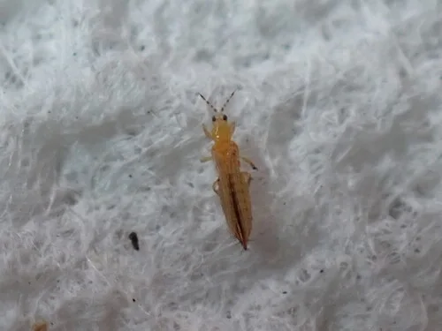

花和嫩叶上的细长小虫
虫细长，多在花和嫩叶上。先把花轻轻敲在白纸上再看。梨形、成堆挤在嫩梢上的，用蚜虫那一条。

先看哪里
将花轻轻敲在白纸上，用放大镜查看细长小虫，并留意花瓣的刮擦状斑纹。
可能原因与下一步
蓟马可能藏在花蕾。隔离明显受害的盆栽，同时检查新开放花朵。
怎样区分相似问题
银白擦伤状条纹、黑色小点和细长活动虫体同时出现，比单看花色变化更有判断价值。
在一朵刚开的花旁选一朵较老的花作比较。先看花瓣基部的褶皱，再看花下方的叶片有没有银白色擦痕和深色小点。在白纸上方轻拍，看有没有细长小虫爬开。伤痕可能在花瓣还折叠于花蕾中时就已形成，因此看见疤痕的位置不一定还留着虫。
现在可以做什么
把花朵放在白纸上方轻拍，用放大镜看落下的虫体；清理残花前也查看花瓣缝隙。
记录同株连续开放的花是否都有相似损伤。若花瓣经常碰到窗玻璃或旁边的茎，也会在固定接触处留下擦痕。移开碰撞物后新花不再有伤，原来的疤痕可能是机械损伤。若仍有活蓟马且新伤不断，邻近正开花的植株也要检查。保留虫体近照，花瓣畸形本身还不足以决定如何处理。
接下来观察什么
留意下一批花苞打开时是否又有新伤；已经受损的花瓣会保留疤痕。
将刚开的花在浅色纸上轻叩，用放大镜辨认掉落的细长虫，再查看同枝正在开放的花蕾。花瓣舒展才显露的伤痕，可能在闭蕾时就已形成，不能据此断定开放花上仍有成虫。